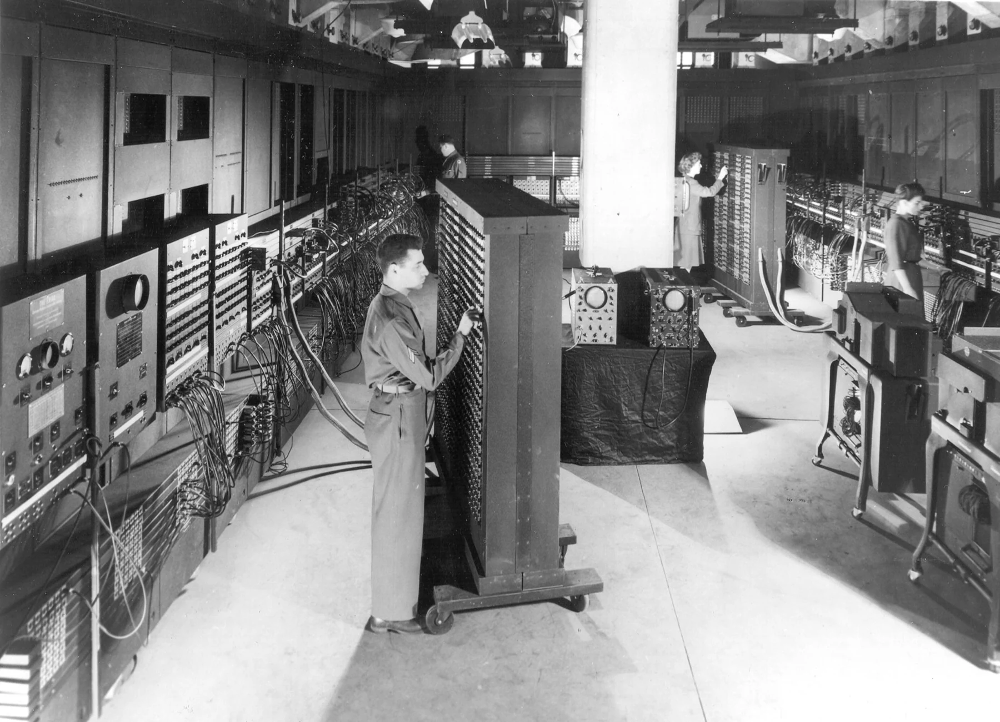
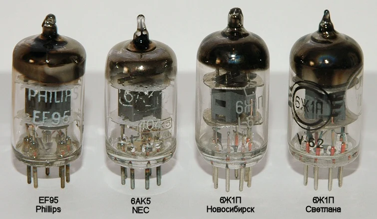
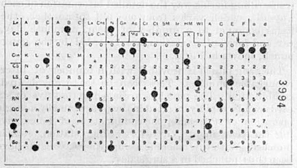
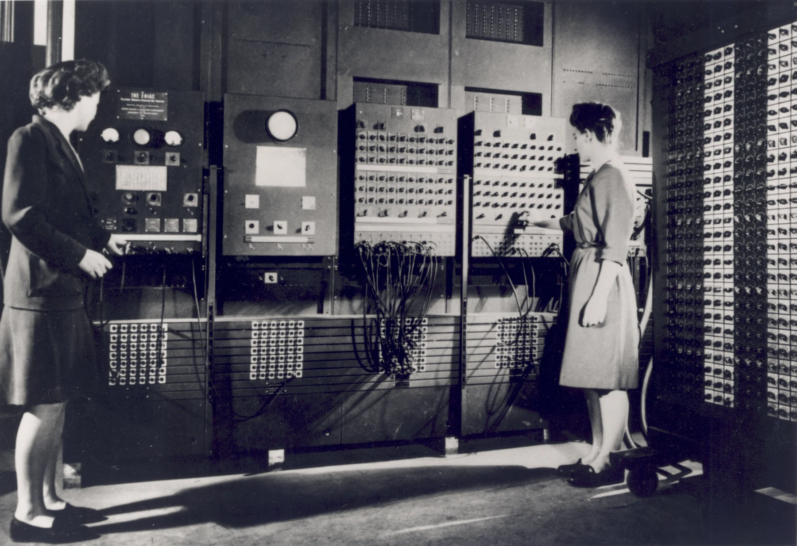
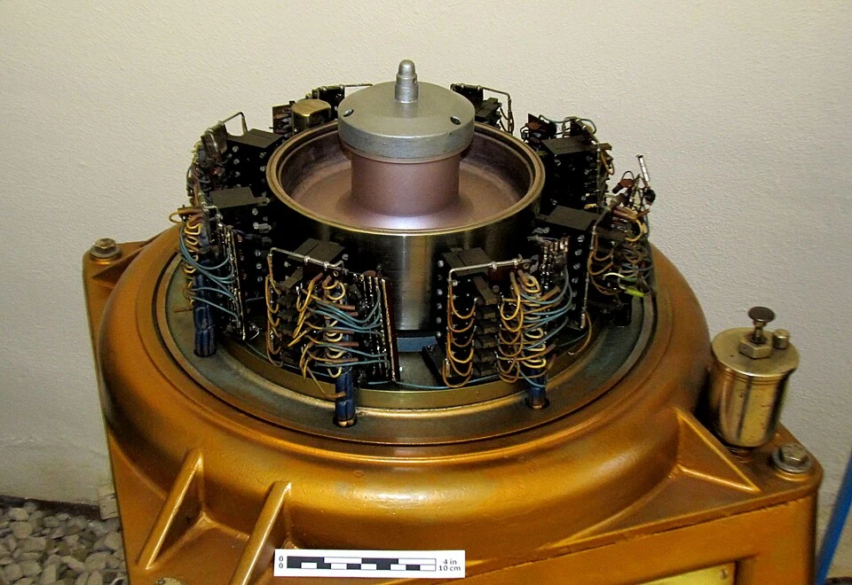

Cuando una computadora ocupaba una habitación.
La primera generación convirtió el cálculo electrónico en una realidad. Sus máquinas eran enormes, consumían mucha energía y necesitaban equipos de especialistas, pero abrieron el camino a la programación y al procesamiento automático de información.
Explorar esta generación
El interruptor que inició todo
Los tubos o válvulas de vacío controlaban el paso de electrones dentro de una envoltura de vidrio. En los circuitos digitales podían representar estados que se interpretaban como datos y operaciones. Miles de estos dispositivos permitían ejecutar cálculos mucho más rápido que los mecanismos puramente mecánicos.
El precio de esa velocidad era alto: las válvulas generaban calor, requerían alimentación eléctrica considerable y podían fallar. La ventilación y el mantenimiento eran parte esencial del trabajo diario. La computadora era una instalación completa, no un aparato para colocar sobre un escritorio.

Programar era una tarea material
Las instrucciones se expresaban en formas muy cercanas al hardware. Según la máquina, preparar un problema implicaba conectar cables, ajustar interruptores o introducir instrucciones codificadas. Las tarjetas y las cintas perforadas permitían registrar datos, aunque los métodos de entrada variaban entre equipos.
El concepto de programa almacenado transformó esta tarea: las instrucciones podían guardarse en la memoria junto con los datos. Así, cambiar de trabajo dejó de depender exclusivamente de modificar conexiones físicas. Este principio se convirtió en una base de la arquitectura de muchas computadoras posteriores.

Máquinas y personas pioneras
ENIAC, presentado en 1946, es uno de los ejemplos más conocidos del cálculo electrónico de propósito general. EDSAC ejecutó programas en 1949 y UNIVAC I mostró el potencial de la computación comercial en 1951. No existe una sola respuesta a «cuál fue la primera computadora»: depende de si hablamos de electrónica, programación o propósito general.
Ingenieros, matemáticas y operadoras hicieron posible que estas máquinas funcionaran. Las programadoras de ENIAC, entre ellas Jean Jennings Bartik y Betty Holberton, tradujeron problemas en secuencias ejecutables. La historia del hardware también es la historia de quienes aprendieron a programarlo.

Del cálculo especializado a una nueva disciplina
Los primeros equipos se emplearon en cálculos científicos, tablas numéricas, investigación y tareas administrativas. La memoria disponible era pequeña en comparación con la actual; se utilizaron distintas tecnologías, como líneas de retardo, tambores magnéticos y otros sistemas experimentales.
Su importancia no se reduce a su tamaño. Demostraron que una máquina programable podía resolver clases distintas de problemas. Sus límites de costo, fiabilidad y consumo impulsaron la búsqueda de un componente más pequeño: el transistor.

¿Qué componente caracteriza a la primera generación?
Elige una respuesta y comprueba lo que aprendiste.